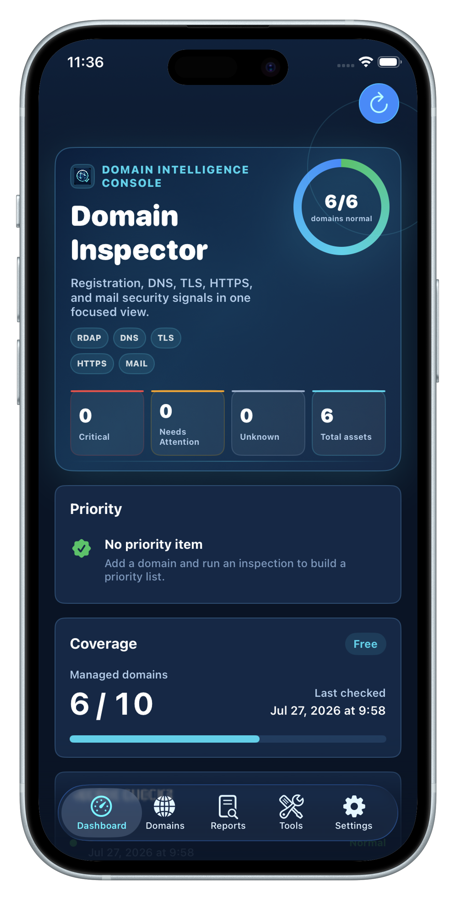

Domain expiry reminders
Report cards highlight remaining days with green, orange, and red states based on urgency.
DOMAIN HEALTH INSPECTOR
DomainName brings domain expiry, DNS records, HTTPS reachability, TLS handshakes, and mail security checks into one focused app for personal sites, APIs, home servers, and small team assets.

FEATURES
Instead of giving domains a confusing score, DomainName identifies whether checks are normal, need attention, disabled, or not configured.
Report cards highlight remaining days with green, orange, and red states based on urgency.
A, AAAA, CNAME, NS, MX, TXT, and DMARC records are grouped by type so results stay readable.
Check HTTPS responses and TLS handshakes, including services that do not run on port 443.
Use JSON for complete backup, migration, and restore, and export PDF reports when you need a readable copy.
WORKFLOW
After you choose a use case, DomainName enables suitable checks for websites, APIs, mail domains, home servers, parked domains, and other common scenarios.
Paste a domain, URL, or explicit service port directly.
Use layered menus to select website, API, mail, or home-service scenarios.
Read results by registration, DNS, HTTP, TLS, and mail categories.
Preserve full app data with JSON backup and export readable PDF reports.
CONNECTED PRODUCT
OpsHome NOC is the main monitoring application for public endpoints, private probes, cloud assets, Docker probes, and discovered infrastructure assets.
PRIVACY
Domain lists and reports are stored in local app data. Backup files are exported only when you choose to create them, so sensitive inventory data does not need to live in public spreadsheets or third-party documents.